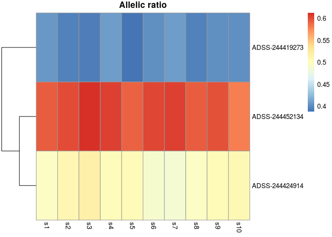
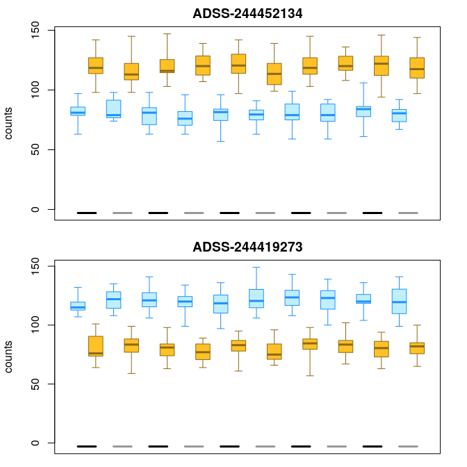
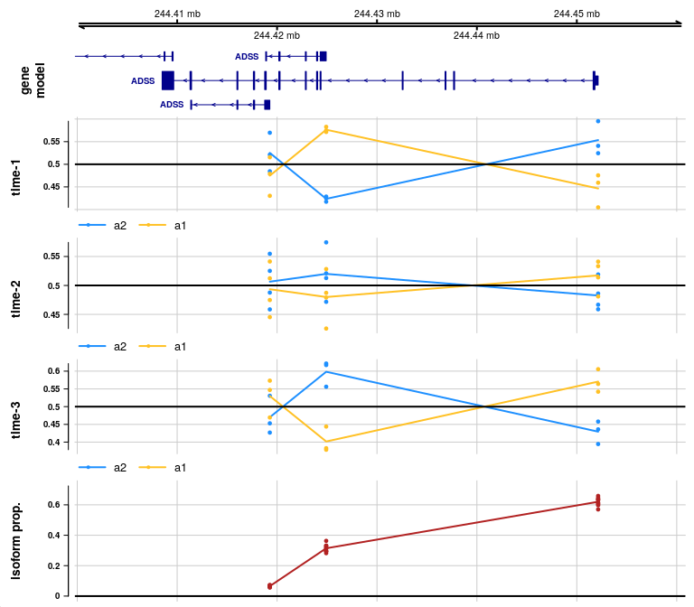
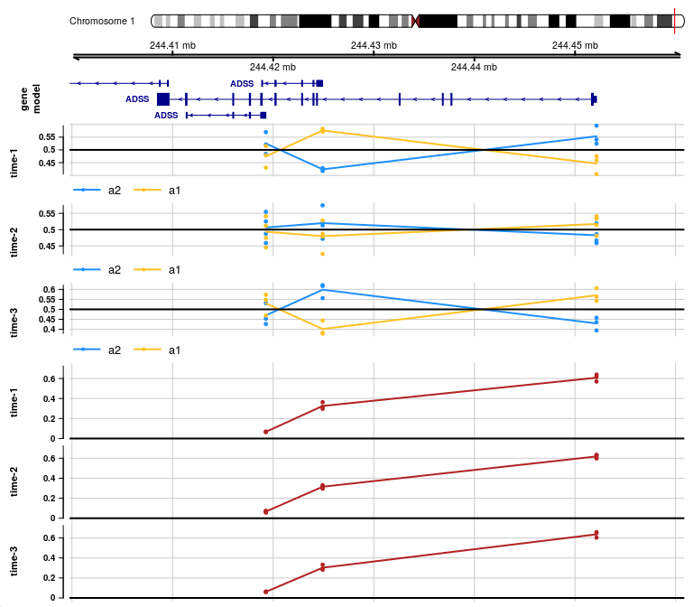

SEESAW - Allelic expression analysis with Salmon and Swish
04/07/2022
Source:vignettes/allelic.Rmd
allelic.RmdIntroduction
In this vignette, we describe usage of a suite of tools, SEESAW, Statistical Estimation of allelic Expression using Salmon and Swish.
Running SEESAW involves generation of a diploid transcriptome (e.g. using g2gtools, construction of a diploid Salmon index (specifying --keepDuplicates), followed by Salmon quantification with a number of bootstrap inferential replicates (we recommend 30 bootstrap replicates). These three steps (diploid reference preparation, indexing, quantification with bootstraps) provide the input data for the following statistical analyses in R/Bioconductor. The steps shown in this vignette leverage Bioconductor infrastructure including SummarizedExperiment for storage of input data and results, tximport for data import, and GRanges and Gviz for plotting.
In short the SEESAW steps are:
- g2gtools (reference preparation)
- Salmon indexing with
--keepDuplicates - Salmon quantification with bootstraps
- Link transcripts to TSS (for TSS-level analysis)
importAllelicCounts()- Swish analysis:
labelKeep()andswish()(skip scaling) - Plotting
SEESAW allows for testing global allelic imbalance across all samples (pairwise testing within each individual), as well as differential or dynamic allelic imbalance (pairwise allelic fold changes estimated within individual, followed by testing across or along an additional covariate). Each of these allelic imbalance (AI) analyses takes into account the potentially heterogeneous amount of inferential uncertainty per sample, per feature (transcript, transcript-group, or gene), and per allele.
Below we demonstrate an analysis where transcripts are grouped by their transcription start site (TSS), although gene-level or transcript-level analysis is also possible. New plotting functions added to fishpond facilitate visualization of allelic and isoform changes at different resolutions, alongside gene models. In the first example, we perform global AI testing, and in the second example we perform dynamic AI testing, in both cases on simulated data associated with human genes.
Linking transcripts to TSS
We begin assuming steps 1-3 have been completed. We can use the makeTx2Tss function to generate a GRanges object t2g that connects transcripts to transcript groups.
suppressPackageStartupMessages(library(ensembldb))
library(EnsDb.Hsapiens.v86)
library(fishpond)
edb <- EnsDb.Hsapiens.v86
t2g <- makeTx2Tss(edb) # GRanges object
mcols(t2g)[,c("tx_id","group_id")]## DataFrame with 216741 rows and 2 columns
## tx_id group_id
## <character> <character>
## ENST00000456328 ENST00000456328 ENSG00000223972-11869
## ENST00000450305 ENST00000450305 ENSG00000223972-12010
## ENST00000488147 ENST00000488147 ENSG00000227232-29570
## ENST00000619216 ENST00000619216 ENSG00000278267-17436
## ENST00000473358 ENST00000473358 ENSG00000243485-29554
## ... ... ...
## ENST00000420810 ENST00000420810 ENSG00000224240-2654..
## ENST00000456738 ENST00000456738 ENSG00000227629-2659..
## ENST00000435945 ENST00000435945 ENSG00000237917-2663..
## ENST00000435741 ENST00000435741 ENSG00000231514-2662..
## ENST00000431853 ENST00000431853 ENSG00000235857-5685..Alternatively for gene-level analysis, one could either prepare a t2g data.frame with tx_id and gene_id columns, or a t2g GRanges object with a column group_id that is equal to gene_id.
Importing allelic counts
Here we will use simulated data, but we can import allelic counts with the importAllelicCounts() function. It is best to read over the manual page for this function. For TSS-level analysis, the t2g GRanges generated above should be passed to the tx2gene argument. This will summarize transcript-level counts to the TSS level, and will attach rowRanges that provide the genomic locations of the grouped transcripts.
Testing for allelic imbalance across samples
We begin by generating a simulated data object that resembles what one would obtain with importAllelicCounts(). The import function arranges the a2 (non-effect) allelic counts first, followed by the a1 (effect) allelic counts. Allelic ratios are calculated at a1/a2.
set.seed(1)
y <- makeSimSwishData(allelic=TRUE)
colData(y)## DataFrame with 20 rows and 2 columns
## allele sample
## <factor> <factor>
## s1-a2 a2 sample1
## s2-a2 a2 sample2
## s3-a2 a2 sample3
## s4-a2 a2 sample4
## s5-a2 a2 sample5
## ... ... ...
## s6-a1 a1 sample6
## s7-a1 a1 sample7
## s8-a1 a1 sample8
## s9-a1 a1 sample9
## s10-a1 a1 sample10
levels(y$allele) # a1/a2 allelic fold changes## [1] "a2" "a1"A hidden code chunk is used to add ranges from the EnsDb to the simulated dataset. For a real dataset, the ranges would be added either by importAllelicCounts (if using tx2gene) or could be added manually for transcript- or gene-level analysis, using the rowRanges<- setter function. The ranges are only needed for the plotAllelicGene plotting function below.
<hidden code chunk>We can already plot a heatmap of allelic ratios, before performing statistical testing. We can see in the first gene, ADSS, there appear to be two groups of transcripts with opposing allelic fold change. SEESAW makes use of pheatmap for plotting a heatmap of allelic ratios.
y <- computeInfRV(y) # for posterior mean, variance
gene <- rowRanges(y)$gene_id[1]
idx <- mcols(y)$gene_id == gene
plotAllelicHeatmap(y, idx=idx)
The following two functions perform a Swish analysis, comparing the allelic counts within sample, while accounting for uncertainty in the assignment of the reads. The underlying test statistic is a Wilcoxon signed-rank statistic.
Plotting results
We can return to the heatmap, and now add q-values, etc. For details on adding metadata to a pheatmap plot object, see ?pheatmap.
dat <- data.frame(minusLogQ=-log10(mcols(y)$qvalue[idx]),
row.names=rownames(y)[idx])
plotAllelicHeatmap(y, idx=idx, annotation_row=dat)
In order to visualize the inferential uncertainty, we can make use of plotInfReps():
par(mfrow=c(2,1), mar=c(1,4.1,2,2))
plotInfReps(y, idx=1, x="allele", cov="sample", xaxis=FALSE, xlab="")
plotInfReps(y, idx=2, x="allele", cov="sample", xaxis=FALSE, xlab="")
SEESAW provides plotAllelicGene() in order to build visualization of Swish test statistics, allelic proportions, and isoform proportions, in a genomic context, making use of Gviz. The first three arguments are the SummarizedExperiment object, the name of a gene (should match gene_id column), and a TxDb or EnsDb to use for plotting the gene model at the top. The statistics and proportions are then plotted at the first position of the feature (start for + features and end for - features).
gene <- rowRanges(y)$gene_id[1]
plotAllelicGene(y, gene, edb)
You can also specify the gene using symbol:
plotAllelicGene(y, symbol="ADSS", db=edb)
In the allelic proportion and isoform proportion tracks, a line is drawn through the mean proportion for a2 and a1 allele, and for the isoform proportion, across samples, at the start site for each transcript group. The line is meant only to help visualize the mean value as it may change across transcript groups, but the line has no meaning in the ranges in between features. That is, unlike continuous genomic features (methylation or accessibility), there is no meaning to the allelic proportion or isoform proportion outside of measured start sites of transcription.
We can further customize the plot, for example, changing the labels displayed on the gene model, and changing the labels for the alleles. An ideogram can be added with ideogram=TRUE, although this requires connecting to an external FTP site.
See importAllelicGene() manual page for more details.
plotAllelicGene(y, gene, edb,
transcriptAnnotation="transcript",
labels=list(a2="maternal",a1="paternal"))
We can also customize the display of the alleles in the plotInfReps() plots, by adding a new factor, while carefully noting the existing and new allele labels, to make sure the annotation is correct:
y$allele_new <- y$allele
# note a2 is non-effect, a1 is effect:
levels(y$allele)## [1] "a2" "a1"
# replace a2 then a1:
levels(y$allele_new) <- c("maternal","paternal")
plotInfReps(y, idx=1, x="allele_new",
legend=TRUE, legendPos="bottom")
Testing for dynamic allelic imbalance
Above, we tested for global AI, where the allelic fold change is consistent across all samples. We can also test for differential or dynamic AI, by adding specification of a cov (covariate) which can be either a two-group factor, or a continuous variable. For continuous variable, the user should specify a correlation test, either cor="pearson" or "spearman".
set.seed(1)
y <- makeSimSwishData(dynamic=TRUE)
colData(y)## DataFrame with 20 rows and 3 columns
## allele sample time
## <factor> <factor> <numeric>
## s1-a2 a2 sample1 0.00
## s2-a2 a2 sample2 0.11
## s3-a2 a2 sample3 0.22
## s4-a2 a2 sample4 0.33
## s5-a2 a2 sample5 0.44
## ... ... ... ...
## s6-a1 a1 sample6 0.56
## s7-a1 a1 sample7 0.67
## s8-a1 a1 sample8 0.78
## s9-a1 a1 sample9 0.89
## s10-a1 a1 sample10 1.00Again, a hidden code chunk adds ranges to our simulation data.
<hidden code chunk>In the following, we test for changes in allelic imbalance within sample that correlate with a covariate time.
Note the first two features have small q-values and opposite test statistic; here the test statistic is the average Pearson correlation of the allelic log fold change with the time variable, averaging over bootstrap replicates.
mcols(y)[1:2,c("stat","qvalue")]## DataFrame with 2 rows and 2 columns
## stat qvalue
## <numeric> <numeric>
## ADSS-244452134 0.870969 0.005
## ADSS-244419273 -0.861573 0.005For plotting inferential replicates over a continuous variable, we must first compute summary statistics of inferential mean and variance:
y <- computeInfRV(y)Now we can examine the allelic counts across the time variable:
par(mfrow=c(2,1), mar=c(2.5,4,2,2))
plotInfReps(y, idx=1, x="time", cov="allele", shiftX=.01, xaxis=FALSE, xlab="", main="")
par(mar=c(4.5,4,0,2))
plotInfReps(y, idx=2, x="time", cov="allele", shiftX=.01, main="")
With a little more code, we can add a lowess line for each series:
plotInfReps(y, idx=1, x="time", cov="allele", shiftX=.01)
dat <- data.frame(
time = y$time[1:10],
a2 = assay(y, "mean")[1,y$allele=="a2"],
a1 = assay(y, "mean")[1,y$allele=="a1"])
lines(lowess(dat[,c(1,2)]), col="dodgerblue")
lines(lowess(dat[,c(1,3)]), col="goldenrod4")
Visualizing the allelic proportion in a heatmap helps to see relationships with the time variable, while also showing data from multiple features at once:
idx <- c(1:4)
row_dat <- data.frame(minusLogQ=-log10(mcols(y)$qvalue[idx]),
row.names=rownames(y)[idx])
col_dat <- data.frame(time=y$time[1:10],
row.names=paste0("s",1:10))
plotAllelicHeatmap(y, idx=idx,
annotation_row=row_dat,
annotation_col=col_dat)
Finally, by binning the time covariate into a few groups, we can again draw the allelic and isoform proportions in the genomic context, now facetting across time.
First we create the binned covariate using cut, and rename the labels for nicer labels in our plot:
y$time_bins <- cut(y$time,breaks=c(0,.25,.75,1),
include.lowest=TRUE, labels=FALSE)
y$time_bins <- paste0("time-",y$time_bins)
table(y$time_bins[ y$allele == "a2" ])##
## time-1 time-2 time-3
## 3 4 3We can then make our facetted allelic proportion plot:
gene <- rowRanges(y)$gene_id[1]
plotAllelicGene(y, gene, edb, cov="time_bins",
qvalue=FALSE, log2FC=FALSE)
If we also want to visualize how isoform proportions may be changing, we can add covFacetIsoform=TRUE, which additionally facets the isoform proportion plot by the covariate:
plotAllelicGene(y, gene, edb, cov="time_bins",
covFacetIsoform=TRUE,
qvalue=FALSE, log2FC=FALSE)
For further questions about the SEESAW steps, please post to one of these locations:
- Bioconductor support site https://support.bioconductor.org and use the tag
fishpondorswish - GitHub Issue https://github.com/mikelove/fishpond
Session info
## R version 4.1.1 (2021-08-10)
## Platform: x86_64-pc-linux-gnu (64-bit)
## Running under: Ubuntu 20.04.3 LTS
##
## Matrix products: default
## BLAS/LAPACK: /usr/lib/x86_64-linux-gnu/openblas-pthread/libopenblasp-r0.3.8.so
##
## locale:
## [1] LC_CTYPE=en_US.UTF-8 LC_NUMERIC=C
## [3] LC_TIME=en_US.UTF-8 LC_COLLATE=en_US.UTF-8
## [5] LC_MONETARY=en_US.UTF-8 LC_MESSAGES=C
## [7] LC_PAPER=en_US.UTF-8 LC_NAME=C
## [9] LC_ADDRESS=C LC_TELEPHONE=C
## [11] LC_MEASUREMENT=en_US.UTF-8 LC_IDENTIFICATION=C
##
## attached base packages:
## [1] stats4 stats graphics grDevices utils datasets methods
## [8] base
##
## other attached packages:
## [1] SummarizedExperiment_1.24.0 MatrixGenerics_1.6.0
## [3] matrixStats_0.61.0 fishpond_2.1.37
## [5] EnsDb.Hsapiens.v86_2.99.0 ensembldb_2.18.4
## [7] AnnotationFilter_1.18.0 GenomicFeatures_1.46.5
## [9] AnnotationDbi_1.56.2 Biobase_2.54.0
## [11] GenomicRanges_1.46.1 GenomeInfoDb_1.30.1
## [13] IRanges_2.28.0 S4Vectors_0.32.4
## [15] BiocGenerics_0.40.0
##
## loaded via a namespace (and not attached):
## [1] colorspace_2.0-3 rjson_0.2.21
## [3] ellipsis_0.3.2 rprojroot_2.0.3
## [5] htmlTable_2.4.0 biovizBase_1.42.0
## [7] qvalue_2.26.0 XVector_0.34.0
## [9] base64enc_0.1-3 fs_1.5.2
## [11] dichromat_2.0-0 rstudioapi_0.13
## [13] farver_2.1.0 bit64_4.0.5
## [15] fansi_1.0.3 xml2_1.3.3
## [17] splines_4.1.1 cachem_1.0.6
## [19] knitr_1.38 Formula_1.2-4
## [21] jsonlite_1.8.0 Rsamtools_2.10.0
## [23] cluster_2.1.3 dbplyr_2.1.1
## [25] png_0.1-7 pheatmap_1.0.12
## [27] compiler_4.1.1 httr_1.4.2
## [29] backports_1.4.1 assertthat_0.2.1
## [31] Matrix_1.4-1 fastmap_1.1.0
## [33] lazyeval_0.2.2 cli_3.2.0
## [35] htmltools_0.5.2 prettyunits_1.1.1
## [37] tools_4.1.1 gtable_0.3.0
## [39] glue_1.6.2 GenomeInfoDbData_1.2.7
## [41] reshape2_1.4.4 dplyr_1.0.8
## [43] rappdirs_0.3.3 Rcpp_1.0.8.3
## [45] jquerylib_0.1.4 pkgdown_2.0.2
## [47] vctrs_0.4.0 Biostrings_2.62.0
## [49] rtracklayer_1.54.0 xfun_0.30
## [51] stringr_1.4.0 lifecycle_1.0.1
## [53] restfulr_0.0.13 gtools_3.9.2
## [55] XML_3.99-0.9 zlibbioc_1.40.0
## [57] scales_1.1.1 BSgenome_1.62.0
## [59] VariantAnnotation_1.40.0 ragg_1.2.2
## [61] hms_1.1.1 ProtGenerics_1.26.0
## [63] parallel_4.1.1 RColorBrewer_1.1-3
## [65] SingleCellExperiment_1.16.0 yaml_2.3.5
## [67] curl_4.3.2 gridExtra_2.3
## [69] memoise_2.0.1 ggplot2_3.3.5
## [71] sass_0.4.1 rpart_4.1.16
## [73] biomaRt_2.50.3 latticeExtra_0.6-29
## [75] stringi_1.7.6 RSQLite_2.2.12
## [77] highr_0.9 BiocIO_1.4.0
## [79] desc_1.4.1 checkmate_2.0.0
## [81] filelock_1.0.2 BiocParallel_1.28.3
## [83] rlang_1.0.2 pkgconfig_2.0.3
## [85] systemfonts_1.0.4 bitops_1.0-7
## [87] evaluate_0.15 lattice_0.20-45
## [89] purrr_0.3.4 htmlwidgets_1.5.4
## [91] GenomicAlignments_1.30.0 bit_4.0.4
## [93] tidyselect_1.1.2 plyr_1.8.7
## [95] magrittr_2.0.3 R6_2.5.1
## [97] Hmisc_4.6-0 generics_0.1.2
## [99] DelayedArray_0.20.0 DBI_1.1.2
## [101] foreign_0.8-82 pillar_1.7.0
## [103] svMisc_1.2.3 nnet_7.3-17
## [105] survival_3.3-1 KEGGREST_1.34.0
## [107] abind_1.4-5 RCurl_1.98-1.6
## [109] tibble_3.1.6 crayon_1.5.1
## [111] utf8_1.2.2 BiocFileCache_2.2.1
## [113] rmarkdown_2.13 jpeg_0.1-9
## [115] progress_1.2.2 grid_4.1.1
## [117] data.table_1.14.2 blob_1.2.2
## [119] digest_0.6.29 textshaping_0.3.6
## [121] munsell_0.5.0 Gviz_1.38.3
## [123] bslib_0.3.1